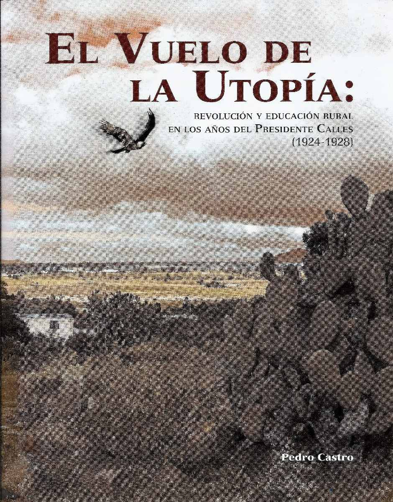

- Inicio
- Publicaciones
- Álvaro Obregón fuego y cenizas de la Revolución Mexicana
- Adolfo de la Huerta El desconocido de Roberto Guzmán Esparza
- A la Sombra de un Caudillovida y muerte del general Francisco R. Serrano
- Soto y Gamagenio y figura
- Adolfo de la Huerta Serie Grandes Protagonistas de la Historia Mexicana
- Historia del Agrarismo en México
- Ciudad Cuauhtémoc, Chihuahuacrónica de su fundación
- Adolfo de la Huerta: la integridad como arma de la revolución
- Adolfo de la Huerta y la Revolución Mexicana
- Fronteras Abiertasgeopolítica y expansionismo en Brasil contemporáneo
- Currículum

ISBN:978-607-454-320-6
Editorial: Monterrey, Agencia Promotora de Publicaciones, 2014
El Vuelo de la Utopía: revolución y educación rural en los años del Presidente Calles (1924-1928)
La Revolución Mexicana sacudió hasta sus cimientos un orden fincado en los privilegios de unos pocos y las carencias de los más, en un precario equilibrio desplomado ante el enfrentamiento en un país al límite de sus posibilidades. A la hora de la reconstrucción después de la lucha de 1910, los líderes revolucionarios entendieron que una de las tareas impostergables era atender al campesino, actor fundamental del movimiento. Un imperativo de justicia social les obligó a resolver las demandas de tierra e instrucción. El compromiso establecido a partir de 1920 hacía ineludible el diseño de una educación general para los nuevos tiempos, y la movilización de la fuerza magisterial hasta los rincones más apartados del país. México se cimbró de nuevo. “Sin educación no hay nación”, fue la inspiradora bandera. En un esfuerzo de titanes, un cuerpo de entusiastas de amplia solvencia profesional y ética hizo posible lo imposible: atender a millones de jóvenes hasta entonces al margen de la educación. Los fundamentos del histórico proyecto tuvieron en José Vasconcelos a su primer impulsor, quien inició la nueva etapa, revolucionaria, de la instrucción del pueblo.
El Vuelo de la Utopía: Revolución y Educación Rural en los Años del Presidente Calles (1924-1928) da cuenta de este esfuerzo presidencial llevado a cabo por quien alguna vez fue maestro e impulsor de la educación en Sonora, su Estado natal. Al lado de hábiles y capaces colaboradores como el doctor José Manuel Puig Casauranc y el profesor Moisés Sáenz, por mencionar a los más destacados, Calles lanzó la segunda etapa de la educación popular en México. Si Vasconcelos llevó la perspectiva educativa y en general la cultura a grandes alturas, e hizo de la alfabetización y el humanismo las piedras torales de su proyecto, los nuevos tiempos tenían otras exigencias Preservando la mejor herencia vasconcelista, el régimen callista planteaba ahora la necesidad de hacer de la educación el gran motor del mejoramiento de la vida de las comunidades en el campo, más allá de la mera instrucción formal de niños, jóvenes y adultos.
Las circunstancias enfrentadas por la administración callista no eran las ideales para llevar adelante tal esfuerzo educativo. Una variedad de propósitos animó el trabajo del gobierno en el campo: instruir, educar para la vida, mejorar las comunidades, elevar la producción agropecuaria. En suma, ofrecer nuevas perspectivas a los campesinos de México. Por las páginas de este libro, en su texto y su material gráfico, desfilan ideas e imágenes, ninguna de las cuales nos deja indiferentes. Todas ellas conmueven hasta lo más profundo. Los maestros rurales y sus humildes estudiantes, los agrestes paisajes, los campesinos construyendo las escuelas para sus hijos, las misiones culturales en las que brillaron maestras y maestros por igual, en la tarea de derrotar al atraso educativo. A pesar de las dificultades y carencias de un país recién salido de un conflicto armado, el régimen callista mantuvo su proyecto contra viento y marea, a favor de la superación educativa de los pobres del campo. México ya no sería igual: la Revolución entraba en su etapa constructiva y se constituía en hito histórico y ejemplo para el mundo.
Réplicas y consultas con el autor: pedrocastro3131@gmail.com
Índice
- Presentación
- La Escuela Rural
- Misiones Culturales
- Alfabetizar, ¿para qué?
- Escuelas Centrales Agrícolas
- Educación Indígena
- La Casa del Estudiante Indígena
- El Indígena y la Pintura al Aire Libre